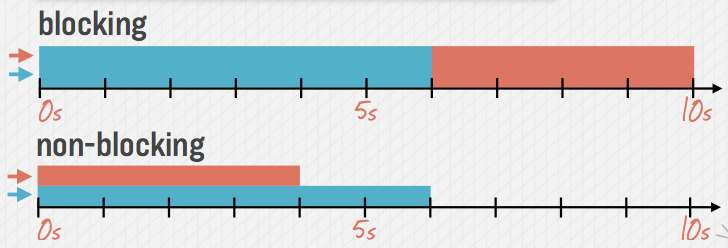

Day 1 - Node.js
Javascript on Server
Verify Setup
Node
$ node -v
NPM
$ npm -v
Node R.E.P.L.
$ node
> var a = 3, b = 3, c = 3; //undefined
> a + b + c //9
What is Node.js?
It's Javascript on the server
Node.js
-
A JavaScript runtime environment running Google Chrome’s V8 engine
-
Designed for high concurrency
-
Evented, Non Blocking I/O
-
CommonJs module system
Sync vs. Async
1 Egg takes 15 mins to boil
10 Eggs take 15 mins
(20 mins practically) and not 150 mins!!
Achieved using Non-blocking code
“Apache uses one thread per connection, where as NGINX uses an event loop.”
Event Loops
Blocking vs Non-Blocking
Blocking Code
var contents = readFile('/path/some/file.txt');
console.log(contents);
console.log('Another independent operation');
Non-Blocking Code
var contents = readFile('/path/some/file.txt', function(err, contents){
console.log(err || contents);
});
console.log('Another independent operation');
Blocking vs Non-Blocking
var callback = function(err, contents) {
console.log(contents);
};
readFile('/path/some/file1.txt', callback);
readFile('/path/some/file2.txt', callback);

01.Setup Node project
$ npm init
Package.json
{
"name": "HandsonTutorial",
"version": "0.1.0",
"description": "A Node project",
"main": "index.js",
"scripts": {
"test": "echo \"Error: no test specified\" && exit 1"
},
"author": "Arvind Ravulavaru",
"license": "MIT"
}
02.Hello Node
Cont...
index.js
console.log('Hello Node!!');
Run
$ node index.js
Hello Node!!
03.NPM Scripts
Cont...
Package.json
{
"name": "HandsonTutorial",
"version": "0.1.0",
"description": "A Node project",
"main": "index.js",
"scripts": {
"start" : "node index.js",
"test" : "echo \"Error: no test specified\" && exit 1"
},
"author": "Arvind Ravulavaru",
"license": "MIT"
}
Run
$ npm start
04.Simple Functions
Cont...
index.js
function greet(what) {
console.log('Hello', what);
}
greet('Node');
greet('NPM');
Run
$ node index.js
Hello Node
Hello NPM
05.Require Modules
Cont...
index.js
var util = require('util');
function greet(what) {
util.print('Hello '+ what+'\n');
}
greet('Node');
greet('NPM');
Run
$ node index.js
Hello Node
Hello NPM
06.Require Local Modules
Cont...
index.js
var greet = require('./greet');
greet('Node');
greet('NPM');
greet.js
var util = require('util');
module.exports = function(what) {
util.print('Hello ' + what + '\n');
}
Run
$ node index.js
Hello Node
Hello NPM
07.HTTP Server
index.jsvar http = require("http"),
port = 1881;
var server = http.createServer(function(request, response) {
response.writeHeader(200, {
"Content-Type": "text/plain"
});
response.write("Hello HTTP!");
response.end();
});
server.listen(port);
console.log("Server Running on " + port + ".\nLaunch http://localhost:" + port);
Run
$ node index.js
http://localhost:1881
08.TCP Server
index.jsvar net = require('net'),
users = [],
port = 2772;
net.createServer(function(socket) {
socket.userid = socket.remoteAddress + ":" + socket.remotePort;
users.push(socket);
socket.write("Hello " + socket.userid + "\n");
broadcast(socket.userid + " joined the chat\n", socket);
socket.on('data', function(data) {
broadcast(socket.userid + "> " + data, socket);
});
socket.on('end', function() {
users.splice(users.indexOf(socket), 1);
broadcast(socket.userid + " left the chat.\n");
});
function broadcast(message, sender) {
users.forEach(function(user) {
if (user === sender) return;
user.write(message);
});
process.stdout.write(message)
}
}).listen(port);
console.log("Chat server running at port " + port + "\n");
$ node index.js
curl http://localhost:2772
09.File Upload
$ npm install formidable
var formidable = require('formidable'),
http = require('http'),
util = require('util'),
port = 3663;
http.createServer(function(req, res) {
if (req.url == '/upload' && req.method.toLowerCase() == 'post') {
// parse a file upload
var form = new formidable.IncomingForm();
form.parse(req, function(err, fields, files) {
res.writeHead(200, {'content-type': 'text/plain'});
res.write('received upload:\n\n');
res.end(util.inspect({fields: fields, files: files}));
});
return;
}
// show a file upload form
res.writeHead(200, {'content-type': 'text/html'});
res.end(
''
);
}).listen(port);
console.log("Server Running on " + port + ".\nLaunch http://localhost:" + port);
$ node index.js
http://localhost:3663
Thanks!
Next up
Express.js